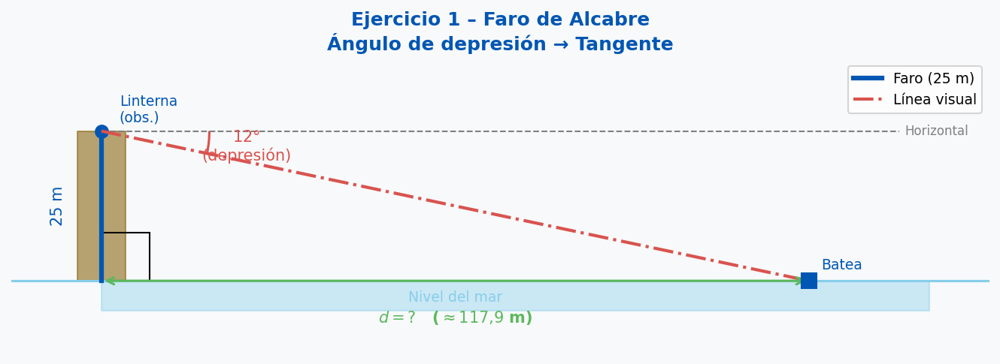
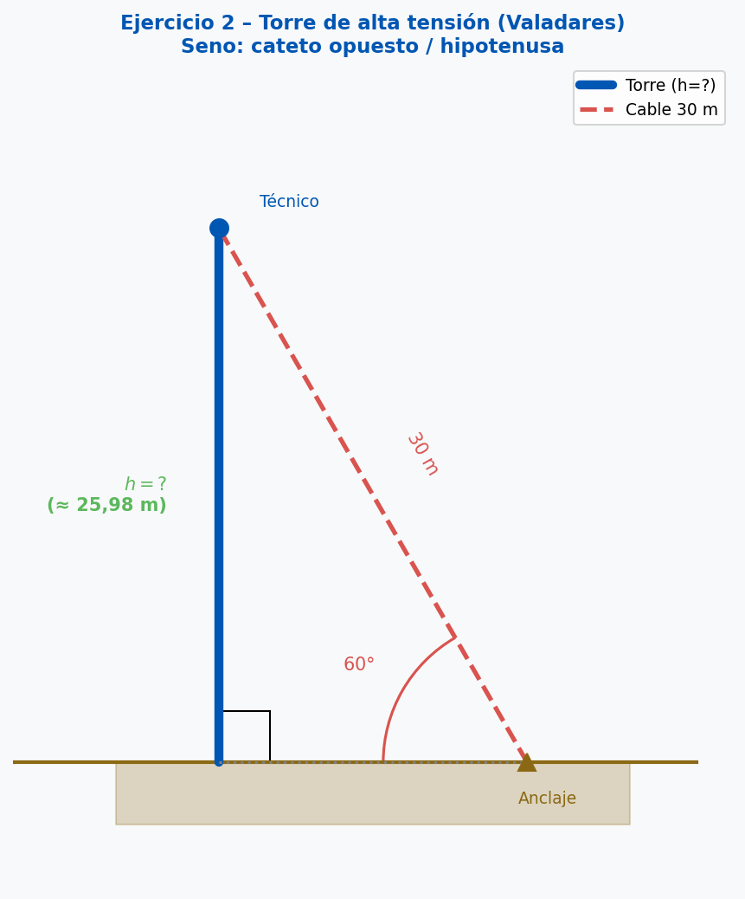
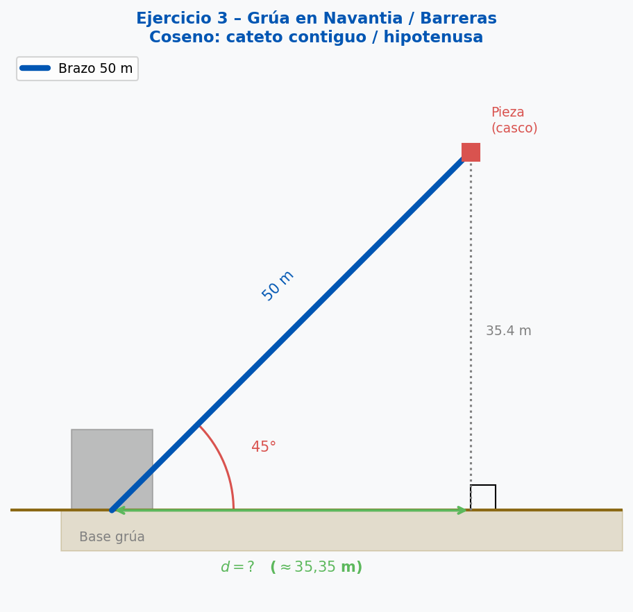
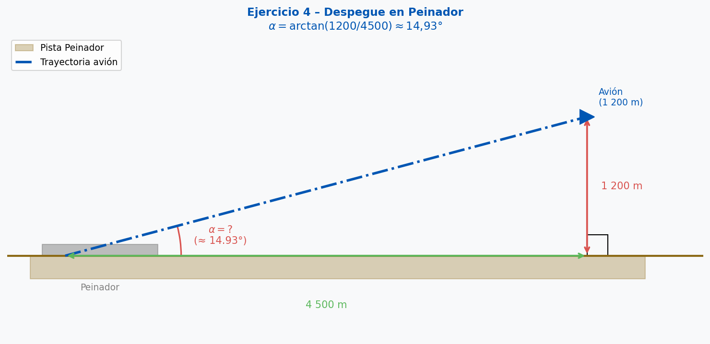

Apuntes Teóricos
Conocimientos previos necesarios: Razones trigonométricas (Seno, Coseno, Tangente) y despeje de ecuaciones de primer grado.
1. El ángulo de elevación y el ángulo de depresión
Cuando observamos un objeto desde un punto, el ángulo de elevación es el ángulo que forma la línea visual con la horizontal hacia arriba.
El ángulo de depresión es el ángulo que forma la línea visual con la horizontal hacia abajo.
Una propiedad clave por ángulos alternos internos (rectas paralelas cortadas por una transversal):
$$\text{Ángulo de depresión desde } A = \text{Ángulo de elevación desde } B$$
Esto nos permite siempre trabajar con el ángulo dentro del triángulo rectángulo.
2. Estrategia de resolución (S·C·T)
Para cada problema, identifica los tres elementos y selecciona la razón adecuada:
- ¿Tengo el ángulo, el cateto opuesto y la hipotenusa? → Usa el Seno.
- ¿Tengo el ángulo, el cateto contiguo y la hipotenusa? → Usa el Coseno.
- ¿Tengo el ángulo, el cateto opuesto y el cateto contiguo? → Usa la Tangente.
$$\sin(\alpha) = \frac{\text{C. Opuesto}}{\text{Hipotenusa}} \qquad
\cos(\alpha) = \frac{\text{C. Contiguo}}{\text{Hipotenusa}} \qquad
\tan(\alpha) = \frac{\text{C. Opuesto}}{\text{C. Contiguo}}$$
Para despejar la incógnita según su posición:
$$\text{Si } \tan(\alpha) = \frac{h}{d} \implies d = \frac{h}{\tan(\alpha)}$$
$$\text{Si } \sin(\alpha) = \frac{h}{L} \implies h = L \cdot \sin(\alpha)$$
$$\text{Si } \cos(\alpha) = \frac{d}{L} \implies d = L \cdot \cos(\alpha)$$
$$\text{Si los catetos son conocidos: } \alpha = \arctan\!\left(\frac{h}{d}\right)$$
Bloque Práctico: Contexto Naval y Topográfico
Modelado
Ejercicio 1 – El Faro de Alcabre
Desde la linterna del Faro de Alcabre, situada a 25 metros sobre el nivel del mar,
se observa una batea de mejillones con un ángulo de depresión de 12°.
¿A qué distancia de la base del faro se encuentra la batea?

Resolución paso a paso:
Paso 1 – Dibujar el triángulo rectángulo.
El faro forma el cateto vertical (\(h = 25\text{ m}\)).
La distancia horizontal al faro (\(d\)) es el cateto horizontal (la incógnita).
La línea visual al observador es la hipotenusa.
Paso 2 – Identificar el ángulo correcto.
El ángulo de depresión (12°) es igual al ángulo de elevación desde la batea,
por ángulos alternos internos entre la línea horizontal del faro y la horizontal de la batea (ambas paralelas).
Por tanto, trabajamos con 12° dentro del triángulo.
Paso 3 – Seleccionar la razón trigonométrica.
Conocemos: ángulo (12°) y cateto opuesto (25 m). Buscamos: cateto contiguo (\(d\)).
→ Usamos la Tangente.
Paso 4 – Plantear y resolver la ecuación.
$$\tan(12°) = \frac{25}{d} \implies d = \frac{25}{\tan(12°)} = \frac{25}{0{,}212} \approx \mathbf{117{,}9 \text{ m}}$$
⚠️ Error común: Colocar el ángulo de 12° en la posición del ángulo recto del triángulo,
o restarle 90° pensando que hay que complementarlo. El ángulo de trabajo es directamente 12°
gracias a los alternos internos.
Práctica guiada
Ejercicio 2 – Torre de alta tensión en Valadares
Un técnico de mantenimiento sube a una torre de alta tensión en el polígono de Valadares.
Sujeta un cable de seguridad de 30 metros al suelo,
formando un ángulo de 60° con la horizontal.
¿A qué altura se encuentra el técnico?

Resolución:
Identificación: El cable es la hipotenusa (\(L = 30\text{ m}\)),
el ángulo es 60°, la incógnita es la altura (\(h\), cateto opuesto).
Razón seleccionada: Seno (cateto opuesto / hipotenusa).
$$\sin(60°) = \frac{h}{30} \implies h = 30 \cdot \sin(60°) = 30 \cdot 0{,}866 \approx \mathbf{25{,}98 \text{ m}}$$
Práctica guiada
Ejercicio 3 – Grúa en los astilleros de Navantia / Barreras
En los astilleros de Navantia o Barreras, una pieza de un casco de barco se levanta con una grúa.
Si el brazo de la grúa mide 50 metros y forma un ángulo de 45° con la horizontal,
¿cuál es la distancia horizontal desde la base de la grúa hasta la vertical de la pieza?

Resolución:
Identificación: El brazo es la hipotenusa (\(L = 50\text{ m}\)),
el ángulo es 45°, la incógnita es la distancia horizontal (\(d\), cateto contiguo).
Razón seleccionada: Coseno (cateto contiguo / hipotenusa).
$$\cos(45°) = \frac{d}{50} \implies d = 50 \cdot \cos(45°) = 50 \cdot 0{,}707 \approx \mathbf{35{,}35 \text{ m}}$$
Práctica independiente
Ejercicio 4 – Despegue en el aeropuerto de Peinador
Un avión que despega de Peinador alcanza una altitud de 1.200 metros
tras haber recorrido una distancia horizontal de 4.500 metros.
¿Cuál es el ángulo de ascenso medio del avión?

Resolución:
Identificación: Se conocen el cateto opuesto (\(h = 1\,200\text{ m}\)) y el cateto contiguo (\(d = 4\,500\text{ m}\)).
La incógnita es el ángulo \(\alpha\).
Razón seleccionada: Tangente. Como buscamos el ángulo, usamos la tangente inversa.
$$\tan(\alpha) = \frac{1200}{4500} = 0{,}2\overline{6} \implies \alpha = \arctan(0{,}266) \approx \mathbf{14{,}93°}$$